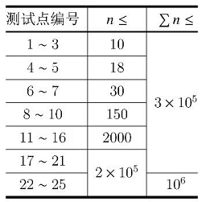

【样例解释】
第一组数据选择的下标为：$\{c_i\}=\{1\}，\{d_i\}=\{1\}$；
第二组数据选择的下标为：$\{c_i\}=\{1,3\}，\{d_i\}=\{2,3\}$；
第三组数据选择的下标为：$\{c_i\}=\{3,4\}，\{d_i\}=\{3,5\}$；
第四组数据选择的下标为：$\{c_i\}=\{2,3,4,6\}，\{d_i\}=\{2,3,4,6\}$；
第五组数据选择的下标为：$\{c_i\}=\{2,3,4,5,6\}，\{d_i\}=\{1,2,3,4,6\}$。
【数据范围与提示】
对于所有测试点：$T \le 10，1 \le \sum n \le 10^6，1 \le L\le K \le n \le 2 \times 10^5，1 \le a_i,b_i \le 10^9$。
每个测试点的具体限制见下表：

 Comet OJ
Comet OJ